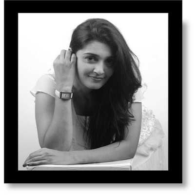

About Me
Seeking a role as a Software Developer. Bring over 10 years of experience working with diverse teams, solving business problems. Possess strong verbal and written communication skills. Work well collaboratively as well as independently. Bring passion for learning and applying as demonstrated by my recent “Coding Bootcamp at UNC Chapel Hill”. Bring domain expertise from HR function and multiple industry verticals.
Experienced in working in large, matrix-structured, global team environments with a wide range of technologies. Bring significant project management, client relationship, and people leadership skills. I bring sharp analytical skills combined with attention to detail in planning and executing projects, managing risks, and collaborating across team/ organizational boundaries. I made significant contributions to building and grooming talent during rapid growth phase at multiple organizations during my earlier roles in HR.
Connect with Me